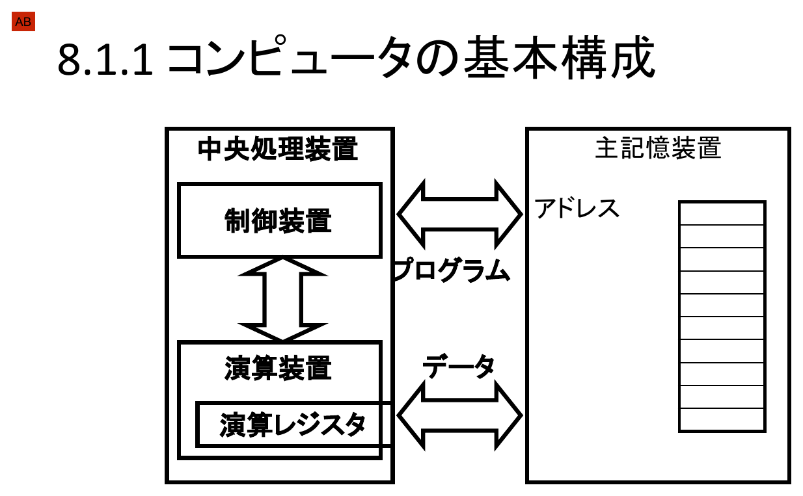
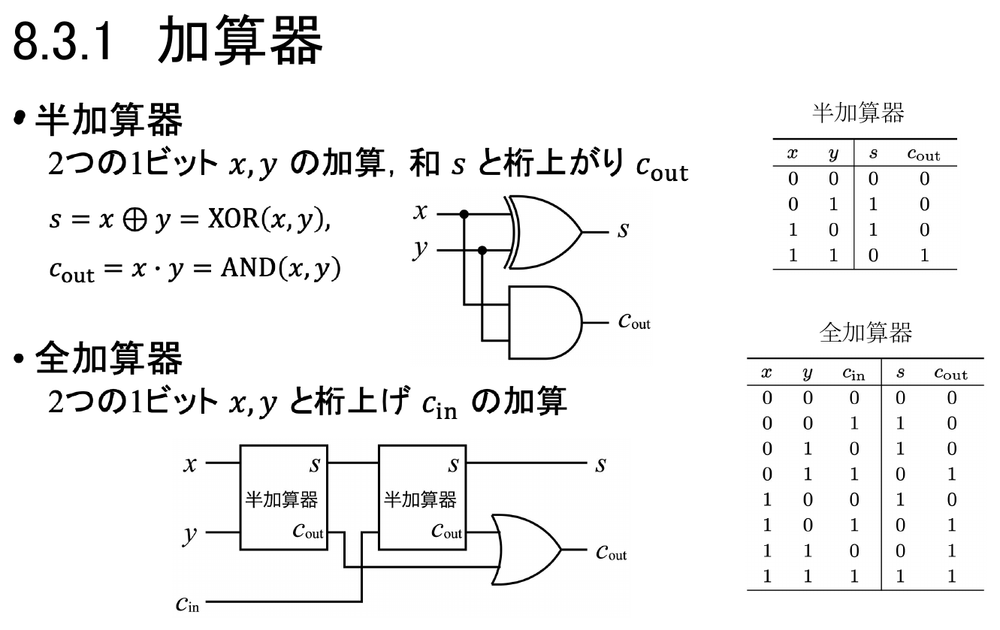
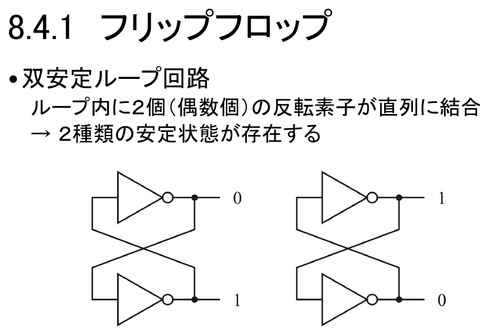
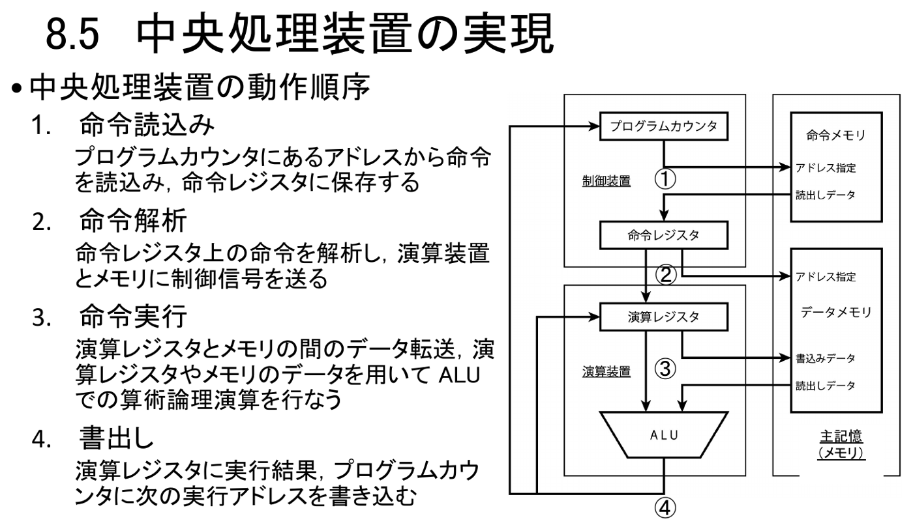
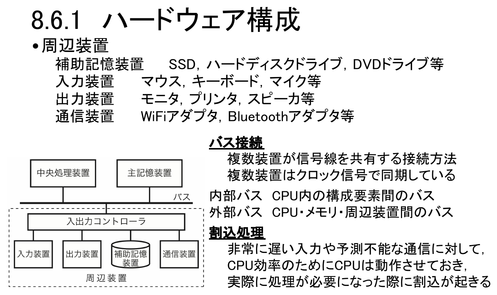

情報｜田中哲郎クラス講義ノート
このページは講義スライドの流れを節単位に組み直し、用語の関係と学習上の要点を説明する。機械語・論理回路・CPU・OSを中心に、定義だけでなく、なぜ必要か、どのように使うかまで確認する。
初期のコンピュータ（ENIACなど）は、実行する処理そのものを配線として組み込んでいた。そのため処理（プログラム）を変更することは、コンピュータを作り直すことにほぼ等しかった。今日のコンピュータが「同じ機械で表計算もゲームも動画編集も動かせる」という意味で汎用であるのは、配線を変えずに済む仕組みを獲得したからである。
プログラムとデータをともに主記憶（メモリ）上に保持する方式をプログラム内蔵方式という。データ（＝計算処理の対象となる情報）だけでなく、プログラム（＝計算処理の手順を表す情報）自体も主記憶上の書き換え可能な情報として扱われるため、配線を変更しなくても、主記憶に書き込む内容を変えるだけで別の処理を実行できる。この構成を提案者にちなんでフォン・ノイマン型コンピュータと呼ぶ。
プログラム内蔵方式のコンピュータは、大きく中央処理装置（CPU）と主記憶装置の2つに分けられる。CPUはさらに、命令の解釈・制御を担う制御装置と、実際の計算を担う演算装置からなる。制御装置は主記憶との間で「プログラム」（命令）をやり取りし、演算装置は「データ」を主記憶との間でやり取りする。演算装置の内部には、計算途中の値を保持する演算レジスタがある。

この4つの部品の役割分担を押さえておくと、次節で追う機械語プログラムの動作や、後述するCPUの命令実行サイクル（フェッチ・デコード・実行・書出し）の説明が、単なる暗記ではなく一つのつながった仕組みとして理解できる。
機械語の命令は、命令コード（命令の種類。load・add・store・分岐など）とオペランド（命令の対象となるアドレス）の組で構成される。たとえば命令 load 2001 は、命令コード「load」（読込め）と、オペランド「2001」（読み込む先のアドレス）からなる。読み込んだ値はAC（アキュムレータ、演算レジスタのこと）に保持される。
命令部分をアドレス1000〜1011に、データ部分をアドレス2001〜2003に配置したプログラムを考える。データ部分は2001番地＝変数sum（初期値0）、2002番地＝変数i（初期値10）、2003番地＝定数one（値1）である。命令部分（1000番地から1つずつ実行され、1011番地で停止する）は次のとおりである。
| アドレス | 命令 | 動作 |
|---|---|---|
| 1001 | load 2001 | sum（2001番地）の値をACに読み込む |
| 1002 | add 2002 | ACにi（2002番地）の値を加える |
| 1003 | store 2001 | ACの値をsum（2001番地）に書き出す（ここまでで sum ← sum + i） |
| 1004 | load 2002 | i（2002番地）の値をACに読み込む |
| 1005 | sub 2003 | ACからone（2003番地、値1）を引く |
| 1006 | store 2002 | ACの値をi（2002番地）に書き出す（ここまでで i ← i − 1） |
| 1007 | 分岐（0なら1009へ） | ACの値（直前の1006の操作からiと同じ）が0であれば、実行を1009に移す |
| 1008 | 分岐（無条件で1001へ） | （1007で1009に移らなければ）常に実行を1001に移す |
| 1009 | load 2001 | sum（2001番地）の値をACに読み込む |
| 1010 | output | ACの値を出力する |
| 1011 | halt | プログラムの実行を停止する |
全体として、このプログラムは「sum に i を加えて sum を更新し、i を1減らす」という処理を、i が0になるまで（1001〜1008を）繰り返し、最後に sum を出力して停止する、というループを機械語だけで表現したものである。
sum=0, i=10から始めて、「sum += i; i -= 1」をiが0になるまで繰り返すと、sumにはi=10,9,8,…,1が順に加算される。したがって最終的にsum = 10+9+8+…+1 = 55が出力され、プログラムは停止する。1つ1つの命令は単純な読み書きにすぎないが、分岐命令（1007・1008）によって同じ命令列を繰り返し実行できる点が、機械語でループを組む仕組みの核心である。
ここではloadやaddのような名前で命令を書いたが、実際のコンピュータの内部では、命令コードもオペランドもすべて数値であり、さらにその数値は2進符号で表現される。人間には読みにくいこの生の数値表現をバイナリプログラムと呼ぶ。命令コードやレジスタに人間が読みやすい名前（load, add, ACなど）を与えたものがアセンブリ言語である。
関連演習として登場するLittle Man Computer（LMC）は、1ワードが10進3桁、メインメモリが100ワードで、乗除算命令を持たない単純な命令セットである。これは最初期のプログラム内蔵方式コンピュータであるEDSAC、およびその影響を受けて1958年に東京大学理学部で作られたパラメトロン計算機PC-1の命令セットに近いが、さらに命令数が少ない。現在多くのPCで使われるIntel社のx86-64の遠い祖先である1971年の4004も、乗除算命令がない点は共通するが、複数のレジスタ（特にインデックスレジスタ）が使えるなど、命令セットとしてはかなり複雑である。命令の種類を極限まで減らせば、命令をたった1種類だけ持つ汎用コンピュータ（OISC, One-instruction set computer）も理論上は実現できる。プログラミングはパズルのような面白さがあるが、実用性はほぼない（分子コンピューティングや量子計算では意味があると考える研究者もいる）。
命令列を1つずつ追って主記憶やレジスタの変化を答える出題は、2023年共通問題 大問3Aや、LMCの実行追跡を扱う2022年個別問題 大問1で実際に出されている。
アセンブラは、アセンブリ言語で書かれたプログラムを、CPUが直接実行できる形式（バイナリプログラム）へと変換するプログラムである。より広く、ある言語で書かれたプログラムを別の言語へ変換・翻訳するプログラムを言語処理系と呼ぶ。言語処理系の中には、変換だけでなく実行まで行うものもある（コンパイラ・インタプリタなど）。
私たちが日常的に書く高水準言語のプログラムも、最終的にはこの節で見た機械語の命令列（読込み・演算・書出し・分岐の組合せ）に変換されて初めてCPU上で実行される。プログラムを書いてから実行結果を得るまでの間には、必ずこうした変換の工程が挟まっていることを意識しておくと、「同じソースコードなのになぜ実行できる形式が複数あるのか（実行ファイル・バイトコードなど）」といった疑問にも見通しがつく。
nビットの入力パターンのそれぞれに対して、mビットの出力がどう決まるかを一覧にした表を真理値表という。入力の組合せは有限（2ⁿ通り）なので、真理値表を書き切れば、その論理関数の動作はすべて記述したことになる。
2つの1ビット入力 $x_1, x_2$ に対する代表的な論理演算として、排他的論理和（XOR, $x_1 \oplus x_2$）と、その否定である排他的論理和の否定（XNOR, $x_1 \odot x_2$）がある。
| $x_1$ | $x_2$ | $x_1\oplus x_2$（XOR） | $x_1\odot x_2$（XNOR） |
|---|---|---|---|
| 1 | 1 | 0 | 1 |
| 1 | 0 | 1 | 0 |
| 0 | 1 | 1 | 0 |
| 0 | 0 | 0 | 1 |
XORは「2つの入力が異なるとき1」、XNORは「2つの入力が一致するとき1」を返す。3入力に拡張したXOR（$x_1\oplus x_2\oplus x_3$）は「1の個数が奇数のとき1」を返す。
| $x_1$ | $x_2$ | $x_3$ | $x_1\oplus x_2\oplus x_3$ |
|---|---|---|---|
| 1 | 1 | 1 | 1 |
| 1 | 1 | 0 | 0 |
| 1 | 0 | 1 | 0 |
| 1 | 0 | 0 | 1 |
| 0 | 1 | 1 | 0 |
| 0 | 1 | 0 | 1 |
| 0 | 0 | 1 | 1 |
| 0 | 0 | 0 | 0 |
論理演算は0と1だけを値にとる代数（ブール代数）の演算規則にしたがう。重要なのは、同じ入出力の対応関係（同じ真理値表）を持つ論理演算でも、複数の異なる論理式・回路構成で表現できるということである。式を等価な別の形に変形できれば、使用するゲート数を減らして回路を簡略化できるため、真理値表という「仕様」と、それを実現する論理式・回路という「実装」は、常に一対多の関係にある。
これらは、真理値表さえあれば機械的に論理式を組み立てられるという点で重要である。任意のn入力1出力の論理関数は、主加法標準形・主乗法標準形のどちらでも（形は異なるが）一意に表現できる。
2入力XORの真理値表で出力が1になるのは、$(x_1,x_2)=(1,0)$ と $(0,1)$ の2パターンである。したがって主加法標準形は、この2パターンにそれぞれ対応する積の項を作り、論理和で結んで $x_1\oplus x_2 = (x_1\cdot\overline{x_2}) + (\overline{x_1}\cdot x_2)$ と書ける。真理値表の「1の行」を機械的に拾うだけで論理式が組み立てられることを確認しておこう。
AND・OR・NOTなどの基本素子（基本演算に相当する部品）を線で結ぶことで論理回路を表現する記法をMIL記法という。次節の半加算器・全加算器の回路図はMIL記法で描かれた代表例であり、XORゲートの記号もそこに登場する。
2進符号で表現された数値に対する演算回路には、加算器・乗算器・減算器などの個別の回路と、それらを1つにまとめた加減算器・ALU（算術・論理演算器）のような汎用の演算回路がある。ここでは基本となる加算器の構成を、実際に真理値表を追いながら確認する。

2つの1ビット $x, y$ を加算し、和 $s$ と桁上がり $c_{\text{out}}$ を出力する回路を半加算器という。$s = x \oplus y = \mathrm{XOR}(x,y)$、$c_{\text{out}} = x \cdot y = \mathrm{AND}(x,y)$ で表され、XORゲート1個とANDゲート1個だけで構成できる。
| $x$ | $y$ | $s$ | $c_{\text{out}}$ |
|---|---|---|---|
| 0 | 0 | 0 | 0 |
| 0 | 1 | 1 | 0 |
| 1 | 0 | 1 | 0 |
| 1 | 1 | 0 | 1 |
半加算器という名前が示すとおり、この回路には弱点がある。下位の桁からの桁上がりを受け取る入力がないため、複数桁の足し算をそのままつなげることができない。
2つの1ビット $x, y$ に加えて、下位桁からの桁上げ $c_{\text{in}}$ も入力として受け取り、和 $s$ と桁上がり $c_{\text{out}}$ を出力する回路を全加算器という。半加算器を2つ直列に並べ（1つ目で $x,y$ を加算し、2つ目でその和と $c_{\text{in}}$ を加算する）、2つの半加算器がそれぞれ出す桁上がりをORゲートでまとめることで構成できる。
| $x$ | $y$ | $c_{\text{in}}$ | $s$ | $c_{\text{out}}$ |
|---|---|---|---|---|
| 0 | 0 | 0 | 0 | 0 |
| 0 | 0 | 1 | 1 | 0 |
| 0 | 1 | 0 | 1 | 0 |
| 0 | 1 | 1 | 0 | 1 |
| 1 | 0 | 0 | 1 | 0 |
| 1 | 0 | 1 | 0 | 1 |
| 1 | 1 | 0 | 0 | 1 |
| 1 | 1 | 1 | 1 | 1 |
全加算器の桁上がり出力 $c_{\text{out}}$ を、1つ上の桁の全加算器の桁上げ入力 $c_{\text{in}}$ につなぐと、全加算器を横に並べるだけで、任意ビット数の2進数どうしの足し算（桁上げ伝播加算器）を組み立てられる。
全加算器をnビット分横に並べ、下位桁の $c_{\text{out}}$ を上位桁の $c_{\text{in}}$ に順に接続すれば、最下位桁だけ $c_{\text{in}}=0$（桁上がりなし）とすることで、nビットの2進数どうしの足し算を1回で実行できる。たとえば4桁の0011（10進で3）と0101（10進で5）を最下位桁から順に加算すると、s=1000（10進で8）が得られ、最上位からの桁上がりは0になる。加算器の個数を増やすだけでビット幅を拡張できる点が、この回路の再利用性の高さである。
一般に2進数の引き算は、引く数の2の補数（各ビットを反転して1を加えたもの）を作り、その補数を加算器に入力することで、足し算に変換して実現できる。この方法をとれば、足し算専用の回路と引き算専用の回路を別々に用意しなくても、同じ加算器の回路（加減算器）で両方を処理できる。
加算・減算に加えて、AND・OR・XORなどの論理演算も制御信号によって切り替えて実行できる、汎用の演算回路をALUという。8.1.1節でCPUの演算装置の内部部品として登場したALUは、まさにこの回路のことであり、演算レジスタ上のデータに対して処理を行う。
真理値表・主加法標準形・全加算器の関係を横断的に問う出題として、2025年個別問題 大問2がある。
組合せ回路には完備性がある。つまり、任意のnビット入力・mビット出力の論理関数は、AND・OR・NOTなどの組合せ回路として実現できる。しかし組合せ回路は、入力の個数・出力の個数があらかじめ固定されているという制約を持つ。時々刻々と入力が与えられ続けるような処理（＝任意個数の入力列に対応する処理）には、組合せ回路だけでは対応できない。
組合せ回路の出力を記憶素子（メモリ）に保持し、その記憶内容を次の入力の一部として再び組合せ回路に与える回路を順序回路という。メモリによって、任意個数の入力列に対応できるようになる。CPUの演算装置（ALU）自体は組合せ回路だが、演算結果を演算レジスタや主記憶に保持し、次の計算の入力として再利用することで、CPU全体としては状態（過去の計算結果）を持つ順序回路として振る舞う。
2個（偶数個）の反転素子（NOTゲート）をループ状に直列接続すると、出力として0を出し続ける状態と、1を出し続ける状態という2種類の安定状態が存在する回路ができる。これが1ビットの記憶素子の土台になる。

双安定ループ回路だけでは、外から状態を指定する手段がない。そこでs（set、値を1にする）とr（reset、値を0にする）という2つの制御入力を加えたものが非同期式RSフリップフロップである。素子の極性（信号がどちらの向きで有効になるか）によって、次の2通りの特性表が得られる。
| $s$ | $r$ | 次の状態 | 動作 |
|---|---|---|---|
| 0 | 0 | 変化なし | 状態保存 |
| 0 | 1 | 0 | リセット |
| 1 | 0 | 1 | セット |
| 1 | 1 | — | 禁止 |
| $\overline{s}$ | $\overline{r}$ | 次の状態 | 動作 |
|---|---|---|---|
| 0 | 0 | — | 禁止 |
| 0 | 1 | 1 | セット |
| 1 | 0 | 0 | リセット |
| 1 | 1 | 変化なし | 状態保存 |
$s=1, r=1$（あるいは $\overline{s}=0,\overline{r}=0$）のように、setとresetを同時に有効にする入力は禁止されている。両方の指示が同時に来ると、回路の出力が定まらない、あるいは不安定になるためである。真理値表に「禁止」の行があるのは、単に無意味な組合せというより、そのような入力を作ってはいけないという設計上の制約だと理解するとよい。
デジタル回路の処理は高速だが、それでもわずかな時間がかかる。記憶内容を一定時間確実に保持するため、クロック信号を使って回路全体の動作タイミングを同期させたものが同期式RSフリップフロップである。回路全体の処理速度が速いほど、クロック周波数を高く設定できる。
順序回路では、メモリの内容（出力）が組合せ回路で処理され、その結果が再びメモリへ記憶（入力）される。しかし、同期式RSフリップフロップの出力と入力をそのままループさせると、反転素子が奇数個並ぶ形になり、発振してしまう可能性がある。そこで、内部にマスターとスレーブという2段のRSフリップフロップを持ち、クロック信号のon/offによって常にどちらか一方だけが動作するように制御したMS（マスタースレーブ型）フリップフロップが使われる。MS型でも状態保存・リセット・セット・禁止という基本的な4パターンの振る舞いは変わらないが、状態が確定するタイミングがクロックの切替わりに同期している点が非同期式との違いである。
ここまでのRS型フリップフロップを土台に、禁止状態を持たない実用的なDフリップフロップ（1つのデータ入力Dだけで動作するフリップフロップ）をn個並べることで、nビットの値をまとめて記憶できるnビットレジスタが構成できる。8.1.1節で登場したプログラムカウンタ・命令レジスタ・演算レジスタは、いずれもこのnビットレジスタの応用である。
本節・前節で用いたMIL記号は、長らく国際規格ISOおよび日本産業規格JISで採用されてきたが、現在ではISO 60617・JIS C 0617で定義された新しい回路記号を用いることが推奨されている。教科書や過去の資料ではMIL記号、最新の規格文書では新記号、という違いがあることを知っておくとよい。

2節で1命令ずつ追跡したload・add・store・分岐命令は、実際にはこの4段階を経て実行される。たとえばload 2001命令であれば、①プログラムカウンタの指すアドレスから命令自体を読み込み、②それが「loadでオペランドは2001」という命令であると解析し、③データメモリの2001番地から値を読み出して演算レジスタへ転送し、④演算レジスタに結果（読み出した値そのもの）を保持しつつプログラムカウンタを次のアドレスへ進める、という流れになる。この4段階を1命令ごとに繰り返すのがCPUの基本動作である。
主記憶装置（メインメモリ）の動作速度はCPUに比べて遅いため、CPUと主記憶の間のデータ転送そのものが処理全体の速度のボトルネックになりやすい。プログラム内蔵方式の必然的な弱点として、この問題はフォン・ノイマンボトルネックと呼ばれる。
制御装置への命令の読込みや、演算装置との間のデータの読み書き用に配置された、高速だが小容量のメモリをキャッシュメモリという。キャッシュが主記憶装置と同じ情報を保持している状態をヒット、保持していない状態をミスと呼ぶ。ヒットの場合は高速に処理できるが、ミスの場合は主記憶まで読みに行く必要があり、処理速度が大幅に低下する。
CPUと主記憶装置だけでは、コンピュータは外部とやり取りできない。処理を実行するにはプログラムやデータを入力する必要があり、実行結果を出力しなければ意味がない。この役割を担うのが周辺装置である。

複数の装置が信号線を共有する接続方法をバス接続という。バスにつながる複数の装置はクロック信号によって同期している。CPU内部の構成要素（制御装置・演算装置など）の間をつなぐバスを内部バス、CPU・主記憶・周辺装置の間をつなぐバスを外部バスという。
キーボード入力のような非常に遅い入力や、通信のような予測不能なタイミングで発生するイベントに対して、CPUをそのつど待たせて効率を落とすのではなく、CPUは他の処理を動作させ続けておき、実際に処理が必要になった時点で割込（interrupt）が発生し、CPUがその処理に切り替わる仕組みを割込処理という。
周辺装置とバス・割込処理を合わせて理解すると、「CPUは主記憶とだけ会話していればよい」という単純化されたモデル（1節）に対して、実際のコンピュータでは周辺装置との入出力が絶えず発生し、それを効率よくさばく仕組みが不可欠であることが分かる。
複数のプログラムを主記憶上に載せて実行し、複数のプログラムによる主記憶の利用を調整し、周辺装置との通信を統括する、といった機能を実現するプログラムをオペレーティングシステム（OS）という。「基本ソフトウェア」とも呼ばれる。有限なコンピュータ資源を複数のプログラム・複数の利用者で効率よく使うための環境管理が、OSの主要な役割である。
個別の応用プログラムとOSとのインタフェースをAPI（応用プログラミングインタフェース）という。OS上で動く応用プログラムがメモリ割当てやファイルの入出力を行う際は、OSの機能を呼び出すシステムコール（OS APIやネイティブAPIとも呼ばれる）を経由する。これに対し、ネットワーク上で動くプログラムに対するサービスの要求・提供のためのインタフェースはネットワークAPI（リモートAPI）と呼ばれ、こちらも単に「API」と呼ばれることが多いので注意が必要である。
OSに対して応用プログラムの起動・終了などをユーザが指示するためのインタフェースをユーザインタフェースという。GUI（グラフィカルユーザインタフェース）が中心だが、プログラミング可能なCUI（コマンドラインインタフェース）も広く使われる。ユーザインタフェースの設計原則そのものは、第9章 ユーザインタフェースで詳しく扱う。
用語を単独で暗記するのでなく、題材のどこにその概念が現れ、どの条件を根拠に判断するかを説明できるようにする。
プログラム内蔵方式、機械語の命令とループ、論理関数とブール代数、加算器、フリップフロップと順序回路、CPUのフェッチ・デコード・実行サイクル、周辺装置とOSは、ばらばらの知識ではなく「主記憶上の0と1の並びを、ゲートの組合せでどう処理し、どう繰り返し、どう外部とやり取りするか」という一本の筋でつながっている。各節の太字語・真理値表・図を、自分の言葉で説明できるか確認しよう。